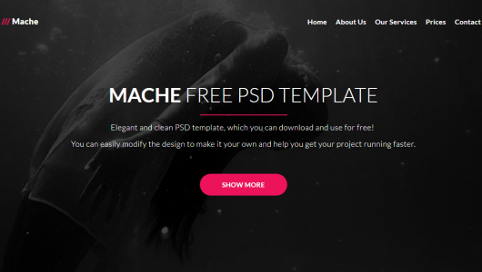
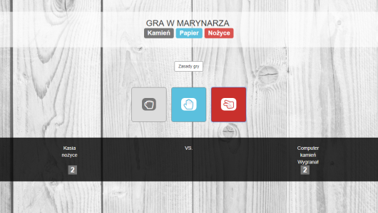
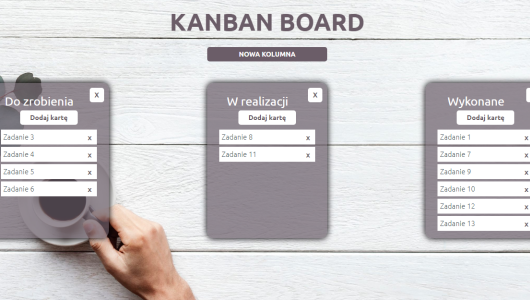

My projects


Slice PSD to HTML
Template based on a PSD file. Self—programmed project in HTML and CSS template with use Sass, Bootstrap, JS and jQuery. Used possibilities of Sass: variables, nesting and mixins. Bootstrap’s carousel and grid. JS and jQuery made it possible to get interactivity of selected buttons and animation of icons. RWD made thanks to Media queries and Bootstrap’s grid. The project has a Git version control.


Stone, Paper, Scissors
Application for playing the popular game. The game is programmed as part of a bootcamp with using Bootstrap and JavaScript. The project allowed me to practice JS with creating variables, conditional instruction if, swich and defining functions as well as manipulation of DOM elements.

Kanban Board
Kanban Board is used to manage tasks and projects. The project has been programmed during the bootcamp. The application uses jQuery and jQueryUI. Layout and graphics designed by myself with Sass compiled to CSS. The project allow me to learn the basics of communication with the server by Ajax and API.